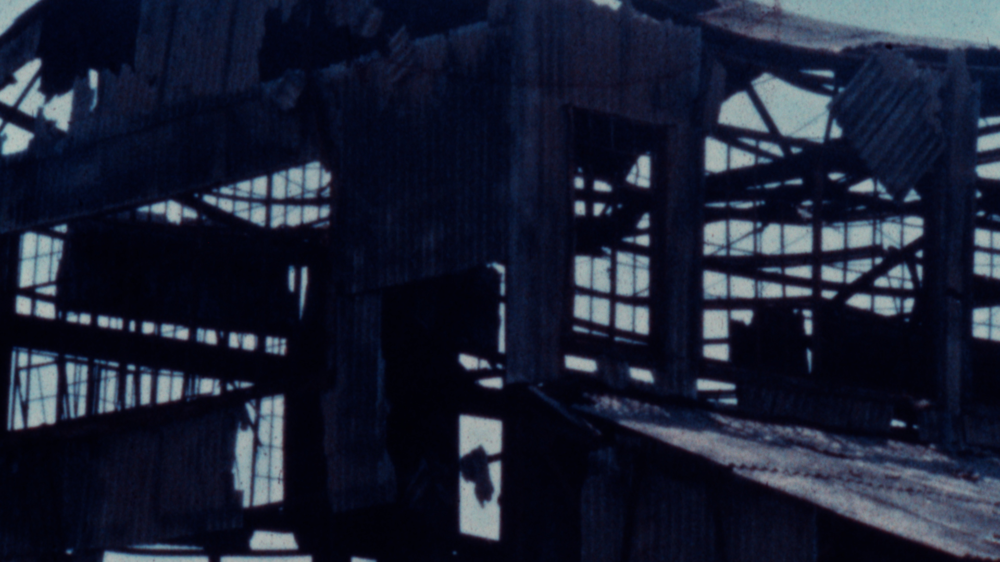

Pieces of my Sleep

2023 | Super 8 | 2'24"
preview here
Shot at various shores between the Rockaways, New York and Mystic, Connecticut.
Dream-like otherworldliness inches towards you– to wake you up or lull you back to sleep.
Slow and serious shoreline play unrolls; warning lights flash to call you back inside.
A piecemeal meditation on world (de/re)construction.